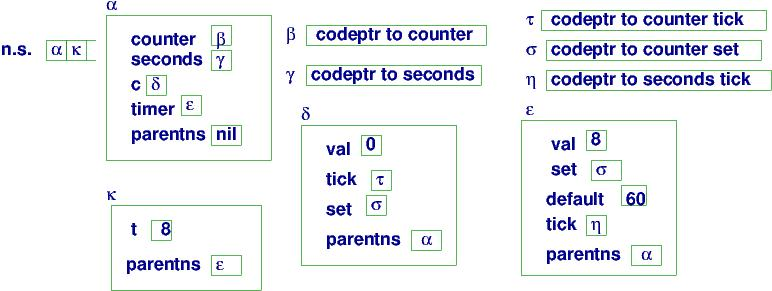

You will extend the interpreter you built in Programming project 2. The extensions go in three parts.
First, you add
object declarations and objects. The objects are "structs" that hold var and proc
declarations, like we saw in the Lecture Note 6.
A sample program will look and work like this:
===================================================
python run.py
Type program; OK to do it on multiple lines; terminate with !
as the first symbol on a line by itself:
int a = 1;
ob counter = new {int val = a;
proc inc(x) : val = ((val + x) + a); print val; end;
};
proc p(): a = (a + counter.val) end;
ob nothingyet = nil;
counter.inc(1);
p();
nothingyet = counter
!
===================================================
Here is the execution of the above program:
===================================================
Parse tree:
[[['int', 'a', '1'], ['ob', 'counter', ['new', ['struct', [['int', 'val', ['deref', 'a']], ['proc', 'inc', ['x'], [], [['=', 'val', ['+', ['+', ['deref', 'val'], ['deref', 'x']], ['deref', 'a']]], ['print', ['deref', 'val']]]]]]]], ['proc', 'p', [], [], [['=', 'a', ['+', ['deref', 'a'], ['deref', ['dot', 'counter', 'val']]]]]], ['ob', 'nothingyet', 'nil']], [['call', ['dot', 'counter', 'inc'], ['1']], ['call', 'p', []], ['=', 'nothingyet', ['deref', 'counter']]]]
Execution:
3
activation stack = ['h0', 'h4']
heap = {
h0 : {'a': 1, 'parentns': 'nil', 'counter': 'h1', 'nothingyet': 'nil', 'p': 'h3'}
h1 : {'parentns': 'h0', 'val': 3, 'inc': 'h2'}
h2 : {'body': [['=', 'val', ['+', ['+', ['deref', 'val'], ['deref', 'x']], ['deref', 'a']]], ['print', ['deref', 'val']]], 'params': ['x'], 'type': 'proc', 'link': 'h1', 'locals': []}
h3 : {'body': [['=', 'a', ['+', ['deref', 'a'], ['deref', ['dot', 'counter', 'val']]]]], 'params': [], 'type': 'proc', 'link': 'h0', 'locals': []}
h4 : {'x': 1, 'parentns': 'h1'}
}
Successful termination.
activation stack = ['h0']
heap = {
h0 : {'a': 4, 'parentns': 'nil', 'counter': 'h1', 'nothingyet': 'h1', 'p': 'h3'}
h1 : {'parentns': 'h0', 'val': 3, 'inc': 'h2'}
h2 : {'body': [['=', 'val', ['+', ['+', ['deref', 'val'], ['deref', 'x']], ['deref', 'a']]], ['print', ['deref', 'val']]], 'params': ['x'], 'type': 'proc', 'link': 'h1', 'locals': []}
h3 : {'body': [['=', 'a', ['+', ['deref', 'a'], ['deref', ['dot', 'counter', 'val']]]]], 'params': [], 'type': 'proc', 'link': 'h0', 'locals': []}
h4 : {'x': 1, 'parentns': 'h1'}
h5 : {'parentns': 'h0'}
}
===================================================
In the example, h0 is the handle to the global variables' namespace. Variable
counter is bound to the handle of a new namespace/object, h1, that holds val, inc, and parentns (which is needed when evaluating the expressions that appear
in the object's int declarations).
When counter.inc(1) is called, it works just as you implemented it in Programming project 2: a new activation record, h4, is constructed for the call to inc, and h4 is pushed onto the activation stack. (Note that h4 holds a parentns link that is set to h1, which is inc's "parent object".)
Once inc's code finishes, the stack is popped. Then p() gets called, and its activation, h5, is pushed then popped.
You must implement
these new parts of the language:
D ::= ... | ob I = E
E ::= ... | new T | nil
T ::= { DL }
L ::= I | L . I
Here is the complete syntax, with the new parts included:
===================================================
To be safe, please use the a23lex.py and a23pars.py files
included and use them to replace what you used for project 2. These two files were revised.
P ::= DL CL
DL ::= D;*
D ::= int I = E | ob I = E | proc I ( IL ) : CL end
CL ::= C;*
C ::= L = E | if E : CL1 else CL2 end | print E | L ( EL )
EL ::= E,*
E ::= N | ( E1 OP E2 ) | L | new T | nil
where OP ::= + | -
T ::= { DL }
L ::= I | L . I
N ::= string of digits
IL ::= I,*
I ::= strings of letters, not including keywords
===================================================
P : Program
CL : CommandList
C : Command
DL : DeclarationList
D : Declaration
EL : ExpressionList
E : Expression
T : TypeTemplate
L : LefthandSide
IL : VariableList
I : Variable
N : Numeral
The input to the interpreter is the list-based parse tree constructed by the parser.
The new constructions are:
DTREE ::= ... | ["ob", ID, ETREE]
ETREE ::= ... | "nil" | ["new", TTREE]
TTREE ::= ["struct", DLIST]
LTREE ::= ID | ["dot", LTREE, ID]
The syntax of all forms of parse trees goes like this:
===================================================
PTREE ::= [DLIST, CLIST]
DLIST ::= [ DTREE* ]
where DTREE* means zero or more DTREEs
DTREE ::= ["int", ID, ETREE] | ["proc", ID, IDLIST, CLIST, DLIST] | ["ob", ID, ETREE]
CLIST ::= [ CTREE* ]
CTREE ::= ["=", LTREE, ETREE] | ["if", ETREE, CLIST, CLIST]
| ["print", ETREE] | ["call", LTREE, ELIST]
ELIST ::= [ ETREE* ]
ETREE ::= NUM | [OP, ETREE, ETREE] | ["deref", LTREE] | "nil" | ["new", TTREE]
where OP ::= "+" | "-"
TTREE ::= ["struct", DLIST]
LTREE ::= ID | ["dot", LTREE, ID]
NUM ::= a nonempty string of digits
IDLIST ::= [ ID+ ]
ID ::= a nonempty string of letters
===================================================
You have these structures to implement: "nil", ["new", TTREE], ["ob", ID, ETREE], ["struct", DLIST], and ["dot", LTREE, ID].
You define def interpretTTREE(ttree). It receives arguments of the form, ["struct", DLIST]. The function does this: (i) allocates a new namespace and pushes the namespace's handle on the activation stack; (ii) evaluates DLIST; (iii)pops the activation stack and returns the popped handle as its answer.
Remember to document appropriately your modified interpreter.
Place all the test cases and their output in a file named tests.txt
Now you extend the interpreter
with classes.
A sample program looks like this:
===================================================
python run.py
Type program; OK to do it on multiple lines; terminate with !
as the first symbol on a line by itself:
int a = 2;
class counter : {int val = 8;
proc inc(x) : val = (val + x); end;
};
ob c = new counter;
proc p(): a = (a + c.val) end;
c.inc(1);
p();
!
===================================================
Here is the execution of the above program:
===================================================
Parse tree:
[[['int', 'a', '2'], ['class', 'counter', ['struct', [['int', 'val', '8'], ['proc', 'inc', ['x'], [], [['=', 'val', ['+', ['deref', 'val'], ['deref', 'x']]]]]]]], ['ob', 'c', ['new', ['call', 'counter']]], ['proc', 'p', [], [], [['=', 'a', ['+', ['deref', 'a'], ['deref', ['dot', 'c', 'val']]]]]]], [['call',['dot', 'c', 'inc'], ['1']], ['call', 'p', []]]]
Execution:
Successful termination.
activation stack = ['h0']
heap = {
h0 : {'a': 5, 'parentns': 'nil', 'c': 'h2', 'counter': 'h1', 'p': 'h4'}
h1 : {'body': ['struct', [['int', 'val', ['deref', 'a']], ['proc', 'inc', ['x'], [], [['=', 'val', ['+', ['deref', 'val'], ['deref', 'x']]]]]]], 'link': 'h0',
'type': 'class'}
h2 : {'parentns': 'h0', 'val': 3, 'inc': 'h3'}
h3 : {'body': [['=', 'val', ['+', ['deref', 'val'], ['deref', 'x']]]], 'params': ['x'], 'type': 'proc', 'link': 'h2', 'locals': []}
h4 : {'body': [['=', 'a', ['+', ['deref', 'a'], ['deref', ['dot', 'c', 'val']]]]], 'params': [], 'type': 'proc', 'link': 'h0', 'locals': []}
h5 : {'x': 1, 'parentns': 'h2'}
h6 : {'parentns': 'h0'}
}
===================================================
The syntax has
these two additions:
D ::= ... | class I : T
T ::= ... | L
That is, we can declare a class and call it.
The parser already implements the new constructions.
You must implement in your interpreter,
DTREE ::= ... | ["class", ID, TTREE]
TTREE ::= ... | ["call", LTREE]
There are two steps:
D ::= ... | override I ( IL ) : DL CL end
T ::= extend T with { DL } | { DL } | L
and the operator trees have two new constructions:
DTREE ::= ... | ["override", ID, ILIST, DLIST, CLIST] TTREE ::= ... | ["extend", TTREE, DLIST]Here is an example:
===================================================
class counter : { int val = 0;
proc tick() : val = (val + 1); end;
proc set(t) : val = t; // (*)
end;
};
class seconds : extend counter with {
int default = 60;
override tick() :
if val : val = (val - 1);
else : set(default)
end;
};
ob c = new counter;
ob timer = new seconds;
c.tick();
print timer.val;
print timer.default;
timer.set(8); timer.tick();
===================================================
Here is a diagram of the storage layout when the execution is doing
the call, timer.set(8), at point (*):
The picture shows these two important modifications:
For example, the call, timer.set(8), calculates the L-value coordinates, (ε, 'set'), fetches σ at those coordinates, and executes the closure code at handle σ. ε is used as the value of parentns for the call to timer.set.
The layout looks a bit like Java's, and it is simpler than the one in the Lecture Notes --- no need for a super-link, and parentns is the same as the this-link. (I am trying to be nice to you and give you less work to do.)
Here are the semantics of the new constructions:
I will study your work and your tests and apply some additional tests, and arrange a meeting with each group to see each of your understanding to grade.